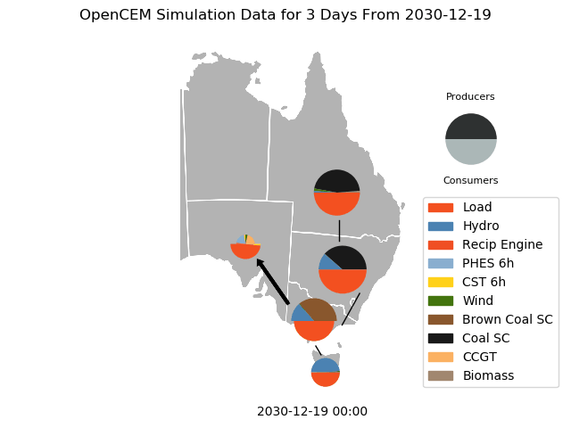

This report was automatically generated.
The minimum reserve margin occurred with the grid operating at 91.73% of capacity at the timestamp: 2030-12-20 17:00:00.
For the three days around this time the grid operated as follows.

Total generation throughout this day was:
For the simulated period, yearly capacity is oultined in the following plot:

| Transmission To | NSW | QLD | SA | TAS | VIC |
|---|---|---|---|---|---|
| Transmission From | |||||
| NSW | 132075 | 288600 | |||
| QLD | 5.0084e+06 | ||||
| SA | 182551 | ||||
| TAS | 397492 | ||||
| VIC | 2.72108e+06 | 5.50164e+06 | 72522.1 |